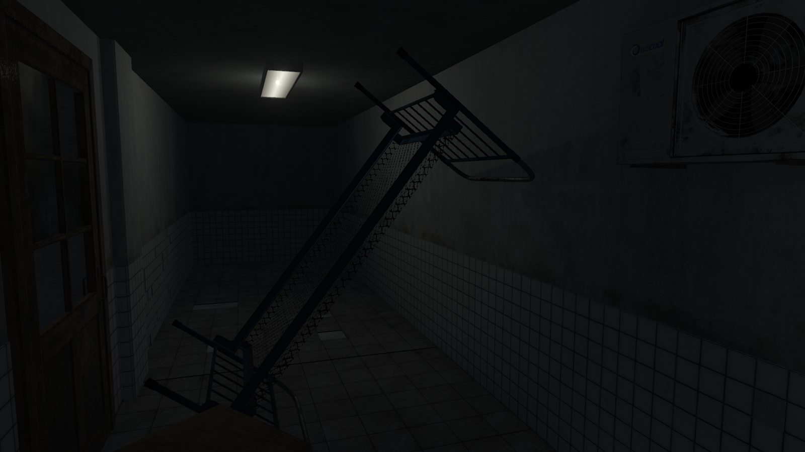
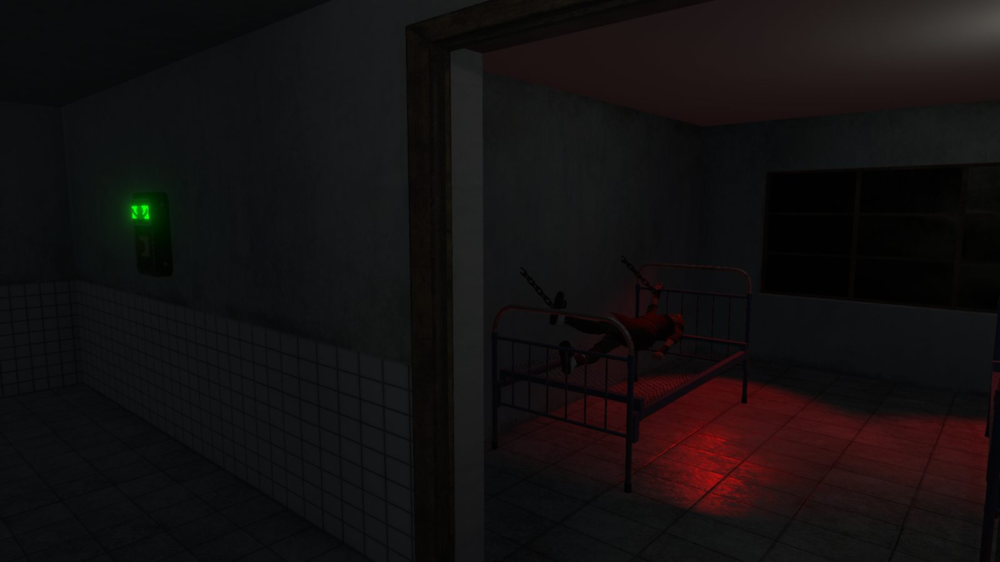
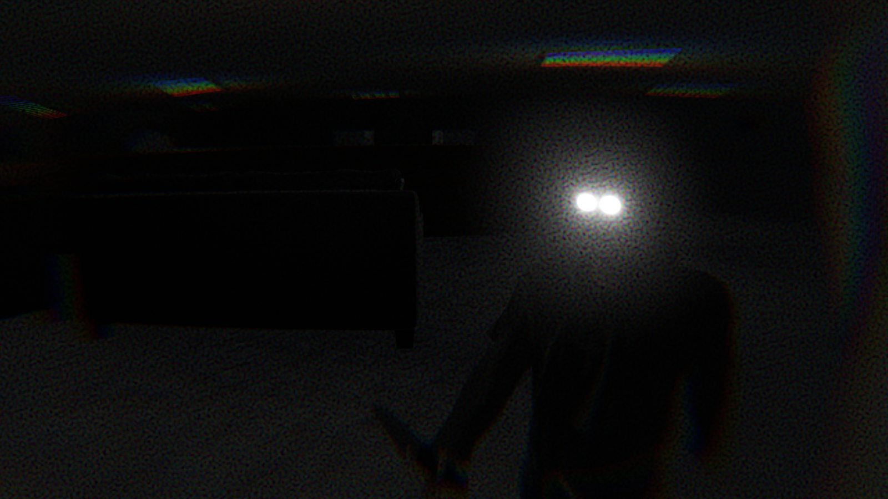
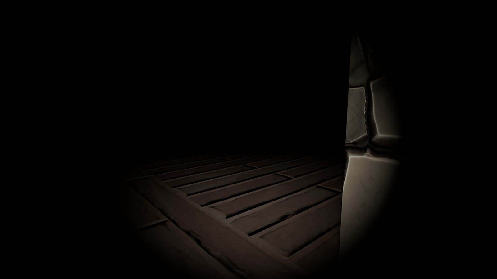

About II Games Studio
Founded in 2020, II Games Studio is an independent game development studio dedicated to fast-paced gameplay and striking atmospheres.
The studio starts with a mechanic and builds a world around it. A respawn flag changes the route through a platformer. A horror game puts the creature in the player’s hands.
Showcase
Selected work from the studio.


What the studio makes
CubeGame is a retro-styled platformer with player-placed checkpoints and boss fights. SCP 173 Simulator reverses the usual horror perspective: the player controls SCP-173 inside a containment facility.
No man’s land brings PS1-inspired graphics to the trenches of World War I. Its focus is the fear of combat. Slowly Strange finds horror in an everyday routine.
Concepts
Environment and lighting studies. Work in progress.








How we make games
The studio works primarily in Unity, with Unreal Engine for selected projects and Blender for 3D models. Game pages credit collaborators and external resources.
Game jams are a place to test a mechanic under a deadline. Earlier prototypes remain playable in the game catalog.